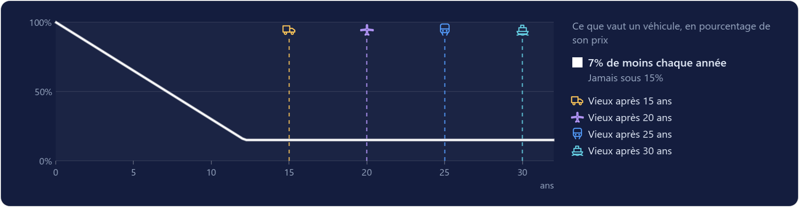

Vieillissement et renouvellement
Pourquoi les vieux véhicules te coûtent des clients.
Chaque type de véhicule a une durée de vie. Au-delà, le véhicule est vieux : les clients le remarquent, et les stations où il charge perdent des points de note.


- Un véhicule perd chaque année 7% de son prix en valeur, jusqu'à 15%. Cette valeur est ce que tu touches en le vendant.
- À l'inverse, un véhicule tout neuf, dans le premier dixième de sa vie, donne un petit bonus à ses stations.
- Les actualités te préviennent quand l'un des tiens vieillit.
Renouveler
- Appuie sur Renouveler dans la fenêtre du véhicule pour l'échanger contre un neuf du même modèle.
- Tu paies le prix du neuf moins ce que vaut encore l'ancien.
- Ou coche Renouveler automatiquement les vieux véhicules dans l'Aperçu de l'entreprise : chaque mois, jusqu'à 3 véhicules ayant dépassé leur durée de vie sont renouvelés, les plus vieux d'abord, tant que la somme que tu as choisi de garder reste à la banque.
- Des modèles plus rapides arrivent au fil des ans. Vendre et acheter un modèle plus récent est souvent la meilleure affaire : voir Ères.
- Le bouton fléché à côté de Renouveler le remplace plutôt par un autre modèle : il garde ses ordres, sa cargaison et son historique, et tu paies le prix du neuf moins ce que vaut l'ancien.
- La même fenêtre peut remplacer d'un coup tous les véhicules de l'itinéraire - ceux qui s'arrêtent aux mêmes stations - et affiche d'abord le total.